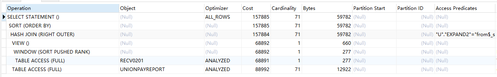

<!doctype html>
<html lang="zh-CN">
<head><meta name="generator" content="Hexo 3.8.0">
    <meta charset="UTF-8">
    <meta http-equiv="X-UA-Compatible" content="IE=11,IE=10,IE=9,IE=8">
    <meta name="baidu-site-verification" content="dIcXMeY8Ya">
    
    <title>记一次Oracle数据库慢查询SQL优化 | CoffeeY Blog</title>
    <meta name="viewport" content="width=device-width, initial-scale=1, maximum-scale=1, user-scalable=0">
    <meta name="keywords" content="Java 后端 Vue">
    <meta name="description" content="Coffee个人记录博客">

    
    <link rel="alternative" href="/atom.xml" title="CoffeeY Blog" type="application/atom+xml">
    
    
    <link rel="shortcut icon" href="/favicon.ico">
    
    <link rel="stylesheet" href="/css/style.css">
    <!--[if lt IE 9]>
    <script src="/js/html5.js"></script>
    <![endif]-->
    
<script>
    var _hmt = _hmt || [];
    (function() {
        var hm = document.createElement("script");
        hm.src = "//hm.baidu.com/hm.js?fd459238242776d173cdc64918fb32f2";
        var s = document.getElementsByTagName("script")[0];
        s.parentNode.insertBefore(hm, s);
    })();
</script>


</head>
</html>
<body class="home">
    <!-- 博客头部 -->
    <header class="header">
    <section class="container header-main">
        <div class="logo">
            <a href="/">
                <div class="cover">
                    <span class="name">CoffeeY Blog</span>
                    <span class="description">JAVA VUE SQL LINUX</span>
                </div>
            </a>
        </div>
        <div class="dropnav icon-paragraph-justify" id="JELON__btnDropNav"></div>
        <ul class="menu hidden" id="JELON__menu">
            
            <li rel="/2019/10/11/oraclesql/index.html" class="item ">
                <a href="/" title="首页" class="icon-home">&nbsp;首页</a>
            </li>
            
            <li rel="/2019/10/11/oraclesql/index.html" class="item ">
                <a href="/code/" title="实验室" class="icon-lab">&nbsp;实验室</a>
            </li>
            
            <li rel="/2019/10/11/oraclesql/index.html" class="item ">
                <a href="/about/" title="关于" class="icon-about">&nbsp;关于</a>
            </li>
            
            <li rel="/2019/10/11/oraclesql/index.html" class="item ">
                <a href="/comment/" title="留言" class="icon-comment">&nbsp;留言</a>
            </li>
            
        </ul>
        <div class="profile clearfix">
            <div class="feeds fl">
                
                
                <p class="links">
                    
                        <a href="https://github.com/YCoffee" target="_blank">Github</a>
                        |
                    
                        <a href target="_blank">Reserved Link Location</a>
                        
                    
                </p>
                <p class="sns">
                    
                        <!-- <a href="" class="sinaweibo" target="_blank"><b>■</b> Reserved</a> -->
                        <a href="javascript: void(0);" class="sinaweibo" target="_blank"><b>■</b> Reserved</a>
                    
                        <!-- <a href="" class="qqweibo" target="_blank"><b>■</b> Reserved</a> -->
                        <a href="javascript: void(0);" class="qqweibo" target="_blank"><b>■</b> Reserved</a>
                    
                    <a href="javascript: void(0);" class="wechat">
                        <b>■</b>
                        Reserved
                        <span class="popover">
                            
                            <i class="arrow"></i>
                        </span>
                    </a>
                </p>
                
            </div>
            <div class="avatar fr">
                
            </div>
        </div>
    </section>
</header>


    <!-- 博客正文 -->
    <div class="container body clearfix">
        <section class="content">
            <div class="content-main widget">
                <!-- 文章页 -->
<!-- 文章 -->
<article class="post article">
    <header class="text-center">
        <h3 class="post-title"><span>记一次Oracle数据库慢查询SQL优化</span></h3>
    </header>
    <p class="post-meta text-center">
        CoffeeY 发表于
        <time datetime="2019-10-11T06:12:25.000Z">2019-10-11</time>
    </p>
    <div class="post-content">
        <h4 id="1、先决分析提供的SQL语句，相应表及列已做脱敏处理"><a href="#1、先决分析提供的SQL语句，相应表及列已做脱敏处理" class="headerlink" title="1、先决分析提供的SQL语句，相应表及列已做脱敏处理"></a>1、先决分析提供的SQL语句，相应表及列已做脱敏处理</h4><pre><code>select 
u.settleyear||u.settlemonth||u.settleday,
u.systrano,
u.terstan,
u.transmsnmonth||u.transmsnday||u.transmsnhout||u.transmsnminute||u.transmsnsecond,
u.priacctno,
u.transat/100,
u.TERMID,
u.mchntcd,
u.CARDACCPTRNMLOC,
u.expand2,
tra.EaAreaCode,
tra.eaareaname,
tra.EaHouseAccountCode,
tra.BUILDACCOUNTCODE,
tra.EAAREAADDRESS,
tra.EAHOUSEADDRESS,
tra.BUILDACCOUNTNAME,
tra.OWNERNAME
from table1 u 
left join 
(select * from (select t.dt,t.eaareacode,t.eaareaname,t.EaAreaAccountName,t.EaHouseAccountCode,t.noticecode,t.BUILDACCOUNTCODE,t.EAAREAADDRESS,t.EAHOUSEADDRESS,t.BUILDACCOUNTNAME,t.OWNERNAME,row_number() over(partition by noticecode order by dt desc) r
from tra.recv t where t.rescode=0) where r=1
) tra on u.expand2=tra.noticecode
where u.mchntcd in(&apos;897493990015&apos;,&apos;897441390018&apos;,&apos;89744139019&apos;)
and u.settleyear||u.settlemonth||u.settleday BETWEEN &apos;20190801&apos; and &apos;20190831&apos;
order by u.settleyear||u.settlemonth||u.settleday;
</code></pre><p>关联表查询的一个多条件查询语句，存在in条件查询，询问到此处是动态的，当in参数过多时，可能会导致全表搜索</p>
<h4 id="2、查看表数据量"><a href="#2、查看表数据量" class="headerlink" title="2、查看表数据量"></a>2、查看表数据量</h4><p>左表’table1’数据量：1,589,359<br>右表’recv’数据量：266,136</p>
<h4 id="3、执行计划分析一下"><a href="#3、执行计划分析一下" class="headerlink" title="3、执行计划分析一下"></a>3、执行计划分析一下</h4><p><center></center><br>发现两张表都是FULL，顺势赶紧查看两张表的索引建立情况，额…，果然两张表都未建立索引，询问后暂不做索引。</p>
<h4 id="附："><a href="#附：" class="headerlink" title="附："></a>附：</h4><h5 id="索引建立规则："><a href="#索引建立规则：" class="headerlink" title="索引建立规则："></a>索引建立规则：</h5><p>1、表的主键、外键必须有索引；</p>
<p>2、数据量超过300的表应该有索引；</p>
<p>3、经常与其他表进行连接的表，在连接字段上应该建立索引；</p>
<p>4、经常出现在Where子句中的字段，特别是大表的字段，应该建立索引；</p>
<p>5、索引应该建在选择性高的字段上；</p>
<p>6、索引应该建在小字段上，对于大的文本字段甚至超长字段，不要建索引；</p>
<p>7、复合索引的建立需要进行仔细分析；尽量考虑用单字段索引代替：</p>
<p>   &emsp; A、正确选择复合索引中的主列字段，一般是选择性较好的字段；</p>
<p>   &emsp; B、复合索引的几个字段是否经常同时以AND方式出现在Where子句中？单字段查询是否极少甚至没有？如果是，则可以建立复合索引；否则考虑单字段索引；</p>
<p>   &emsp; C、如果复合索引中包含的字段经常单独出现在Where子句中，则分解为多个单字段索引；</p>
<p>   &emsp; D、如果复合索引所包含的字段超过3个，那么仔细考虑其必要性，考虑减少复合的字段；</p>
<p>   &emsp; E、如果既有单字段索引，又有这几个字段上的复合索引，一般可以删除复合索引；</p>
<p>8、频繁进行数据操作的表，不要建立太多的索引；</p>
<p>9、删除无用的索引，避免对执行计划造成负面影响；</p>

    </div>
    <p class="post-meta">
        <span class="post-cat">分类：
            <a class="cat-link" href="/categories/back-end/">后端</a>
        </span>
        <span class="post-tags">
            标签：
            
    
        <a href="/tags/oracle/" title="oracle">oracle</a> / 
    
        <a href="/tags/sql/" title="sql">sql</a>
    

        </span>
    </p>
</article>
<!-- 分享按钮 -->

  <div class="article-share clearfix text-center">
    <div class="share-area">
      <span class="share-txt">分享到：</span>
      <a href="javascript: window.open('http://service.weibo.com/share/share.php?url=' + encodeURIComponent(location.href) + '&title=' + document.title + '&language=zh_cn');" class="share-icon weibo"></a>
      <a href="javascript: alert('请复制链接到微信并发送');" class="share-icon wechat"></a>
      <a href="javascript: window.open('http://sns.qzone.qq.com/cgi-bin/qzshare/cgi_qzshare_onekey?url=' + encodeURIComponent(location.href) + '&title=' + document.title);" class="share-icon qqzone"></a>
      <a href="javascript: window.open('http://connect.qq.com/widget/shareqq/index.html?url=' + encodeURIComponent(location.href) + '&desc=CoffeeY个人博客&title=' + document.title + '&callback=' + encodeURIComponent(location.href));" class="share-icon qq"></a>
      <a href="javascript: window.open('http://shuo.douban.com/!service/share?href=' + encodeURIComponent(location.href) + '&name=' + document.title + '&text=' + document.title);" class="share-icon douban"></a>
    </div>
  </div>


<!-- 上一篇/下一篇 -->

<div class="article-nav clearfix">
    
    <span class="prev fl">
        上一篇<br>
        <a href="/2020/01/23/proxy/">
            
                各个PROXY记录
            
        </a>
    </span>
    

    
    <span class="next fr">
        下一篇<br>
        <a href="/2019/09/11/tomcat-deploy/">
            
                Tomcat单(多)项目部署记录
            
        </a>
    </span>
    
</div>

<!-- 文章评论 -->

  <script src="/js/comment.js"></script>
  <div id="comments" class="comment">
    <!--
    <div class="sign-bar">
      GitHub 已登录!
      <span class="sign-link">登出</span>
    </div>
    <section class="box">
      <div class="com-avatar"></div>
      <div class="com-text">
        <div class="main">
          <textarea class="text-area-edited show" placeholder="欢迎评论！"></textarea>
          <div class="text-area-preview"></div>
        </div>
        <div class="switch">
          <div class="switch-item on">编辑</div>
          <div class="switch-item">预览</div>
        </div>
        <div class="button">提交</div>
      </div>
    </section>
    <section class="tips">注：评论支持 markdown 语法！</section>
    <section class="list-wrap">
      <ul class="list">
        <li>
          <div class="user-avatar">
            <a href="/">
              
            </a>
          </div>
          <div class="user-comment">
            <div class="user-comment-header">
              <span class="post-name">张德龙</span>
              <span class="post-time">2017年12月12日</span>
              <span class="like liked">已赞</span>
              <span class="like-num">2</span>
            </div>
            <div class="user-comment-body">333333</div>
          </div>
        </li>
        <li>
          <div class="user-avatar">
            <a href="/">
              
            </a>
          </div>
          <div class="user-comment">
            <div class="user-comment-header">
              <span class="post-name">刘德华</span>
              <span class="post-time">2017年12月12日</span>
              <span class="like">点赞</span>
              <span class="like-num">2</span>
            </div>
            <div class="user-comment-body">vvvvv</div>
          </div>
        </li>
      </ul>
      <div class="page-nav">
        <a href="javascript: void(0);" class="item">1</a>
        <a href="javascript: void(0);" class="item">2</a>
        <a href="javascript: void(0);" class="item current">3</a>
      </div>
    </section>
    -->
  </div>
  <script>
  JELON.Comment({
    container: 'comments',
    label: 'oraclesql' || '2019/10/11/oraclesql/',
    owner: 'YCoffee',
    repo: 'blog_comments',
    clientId: '21c38f588ab8ee604593',
    clientSecret: '7afc59b35b552ea83bf8d7a461bed89fe1f7f0c9'
  });
  </script>


            </div>
        </section>
        <!-- 侧栏部分 -->
<aside class="sidebar">
    <section class="widget">
        <h3 class="widget-hd"><strong>文章分类</strong></h3>
        <!-- 文章分类 -->
<ul class="widget-bd">
    
    <li>
        <a href="/categories/front-end/">前端</a>
        <span class="badge">(2)</span>
    </li>
    
    <li>
        <a href="/categories/back-end/">后端</a>
        <span class="badge">(13)</span>
    </li>
    
    <li>
        <a href="/categories/other/">其他</a>
        <span class="badge">(3)</span>
    </li>
    
    <li>
        <a href="/categories/categorie/">categorie</a>
        <span class="badge">(2)</span>
    </li>
    
    <li>
        <a href="/categories/后台/">后台</a>
        <span class="badge">(1)</span>
    </li>
    
    <li>
        <a href="/categories/后台/版本控制/">版本控制</a>
        <span class="badge">(1)</span>
    </li>
    
</ul>
    </section>

    
    <section class="widget">
        <h3 class="widget-hd"><strong>热门标签</strong></h3>
        <!-- 文章标签 -->
<div class="widget-bd tag-wrap">
  
    <a class="tag-item" href="/tags/es5-6/" title="es5/6">es5/6 (1)</a>
  
    <a class="tag-item" href="/tags/tomcat/" title="tomcat">tomcat (2)</a>
  
    <a class="tag-item" href="/tags/ehcache/" title="ehcache">ehcache (1)</a>
  
    <a class="tag-item" href="/tags/linux/" title="linux">linux (1)</a>
  
    <a class="tag-item" href="/tags/git/" title="git">git (4)</a>
  
    <a class="tag-item" href="/tags/gitlab/" title="gitlab">gitlab (2)</a>
  
    <a class="tag-item" href="/tags/idea/" title="idea">idea (1)</a>
  
    <a class="tag-item" href="/tags/hexo/" title="hexo">hexo (1)</a>
  
    <a class="tag-item" href="/tags/blog/" title="blog">blog (1)</a>
  
    <a class="tag-item" href="/tags/Maven/" title="Maven">Maven (1)</a>
  
    <a class="tag-item" href="/tags/tag/" title="tag">tag (2)</a>
  
    <a class="tag-item" href="/tags/NPM/" title="NPM">NPM (1)</a>
  
    <a class="tag-item" href="/tags/oracle/" title="oracle">oracle (1)</a>
  
    <a class="tag-item" href="/tags/sql/" title="sql">sql (2)</a>
  
    <a class="tag-item" href="/tags/proxy/" title="proxy">proxy (1)</a>
  
    <a class="tag-item" href="/tags/软件工具/" title="软件工具">软件工具 (1)</a>
  
    <a class="tag-item" href="/tags/springboot/" title="springboot">springboot (1)</a>
  
    <a class="tag-item" href="/tags/svn/" title="svn">svn (1)</a>
  
    <a class="tag-item" href="/tags/windows文件夹共享/" title="windows文件夹共享">windows文件夹共享 (1)</a>
  
</div>
    </section>
    

    

    
    <!-- 友情链接 -->
    <section class="widget">
        <h3 class="widget-hd"><strong>友情链接</strong></h3>
        <!-- 文章分类 -->
<ul class="widget-bd">
    
        <li>
            <a href="https://www.baidu.com" target="_blank" title="百度搜索">百度</a>
        </li>
    
</ul>
    </section>
    
</aside>
<!-- / 侧栏部分 -->
    </div>

    <!-- 博客底部 -->
    <footer class="footer">
    &copy;
    
        2018-2020
    

    <a href="/">Ycoffee</a>
    <a> PowerBy</a>
    <a href="https://github.com/hexojs/hexo" target="_blank">HEXO</a>
    <a> ThemeBy</a>
    <a href="https://github.com/jangdelong/hexo-theme-xups" target="_blank">XUPS</a>
</footer>
<div class="back-to-top" id="JELON__backToTop" title="返回顶部">返回顶部</div>

    <!--博客js脚本 -->
    <!-- 这里放网站js脚本 -->
<script src="/js/main.js"></script>
</body>
</html>